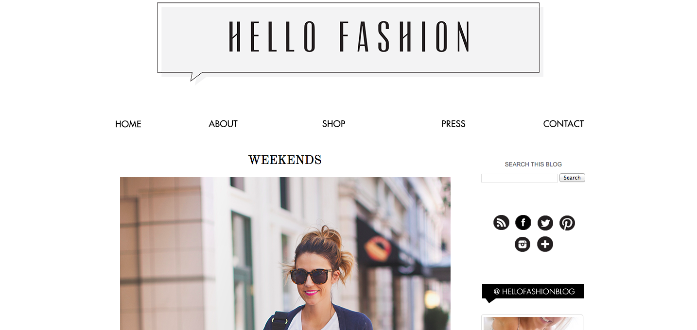
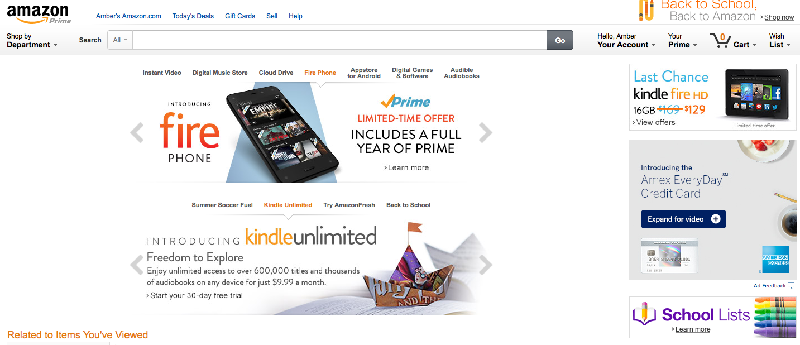
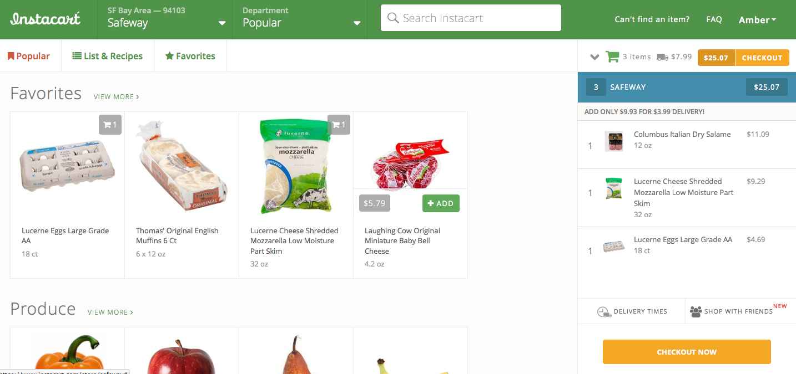

Comparing Website Design
July 20, 2014
Hello there! This week we have to compare the design and function of three of our favorite sites. I tried to select three sites that each serve a different purpose in my life, so here goes!

This is one of my favorite sites because it has creative and approachable style ideas, which range from formal to casual. I often reference it when in a creative rut, or to get new outfit ideas. The site is mostly photographs, with some short text and links to outfit pieces at the end of each post.
When I arrive at the homepage, my eyes are drawn to the most recent post, which is the focus of this style blog. The website is clean and simple, yet pretty in its appearance. It has a standard search and browse set-up and is not overwhelming with color. As to the content, focus and purpose of the site, I would describe it as practical, yet creative and fun. It never fails to make me smile. I think that the appearance of the site meshes well with its purpose, and I never feel like I have wasted my time on the site.
It's really simply to navigate on Hello Fashion thanks to the navigation bar and search bar at the top, blog archive in the right side bar, and arrow buttons at the bottom. It's also easy to navigate in that there is more than one post to a page.

Amazon is another one of my favorite sites because, well, it makes shopping easy and sells next to everything one could need. Living in a city where I walk everywhere, Amazon makes it easy to have large, heavy or bulky items delievered to my home, or help with errands when I don't have the time. The site includes photographs, text and links.
When I arrive at the homepage, my eyes are drawn to the most recent promotion Amazon has (presently, their new phone and the Kindle), as well as to the search bar. I think these two features do represent two of the most important areas of this site, most notably the search bar as I typically go on Amazon with the item(s) I want already in mind. On the other hand, I often find the promotions meaningless. The website is simple but feels cluttered. Some of its navigation bars are not clearly defined or styled. It has a standard search and browse set-up and is not too overwhelming with color, although it is certainly more colorful that Hello Fashion. As to the content, focus and purpose of the site, I would describe it as practical serious, and fun. It's always entertaining to browse search results. I think that the appearance of the site meshes well with its purpose, although it could have a more organized home page in my opinion. However, I never feel like I have wasted my time on the site.
It's really simply to navigate on Amazon thanks to the navigation bar and search bar at the top, list formating and search narrowing options allowed after executing a search, and buttons for Your Account, Prime, Cart and Wish List at the top of every page.

Last but certainly not least is Instacart. This is one of my newer favorites for a similar reason to Amazon - it makes life easier. Instacart is a crowd-sourced grocery delivery web and mobile application. You place an order from any combination of Rainbow Grocery, Safeway, Costco, Instacart Plus, and Whole Foods, and a shopper picks up your groceries for you and delivers it during your selected time (as soon as one hour after order). The site includes photographs, text and links.
When I arrive at the homepage, my eyes are drawn to my favorites (things I order often), as well as what is being promoted for the season (holiday foods, in-season fruits, etc.). There is also a very prominent search bar - are you sensing a theme? I love that search bar. The website is simple and colorful, but not cluttered or distracting. It's well organized and "happy." I really like the color palette. It also has a standard search and browse set-up. As to the content, focus and purpose of the site, I would describe it as practical and fun. It's also very convenient that it can be used on the phone, or online. Like Amazon, I can order from anywhere and at anytime. I definitely think that the appearance of the site meshes well with its purpose. And I never feel like I have wasted my time on the site.
It's really simply to navigate on Instacard thanks to the navigation bar and search bar at the top, list formating for produce, meats, favorites, etc. and well-marked buttons for Your Account and Checkout.